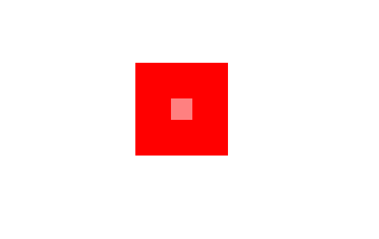

Dans ce chapitre, nous allons appliquer des styles à nos formes : couleurs, dégradés, transparences et ombrages.
Il existe deux méthodes pour affecter des couleurs : fillStyle qui sera utilisée pour le remplissage de forme, et strokeStyle pour la coloration des traits.
Ces deux méthodes acceptent plusieurs nomenclatures :
Pour appliquer une couleur à un trait ou une forme, il faut déclarer la couleur avant la forme.
See the Pen Untitled by OpenSpirit (@OpenSpirit) on CodePen.
La transparence est une valeur comprise entre 0 et 1. Plus on se rapproche de 1, plus le rendu est opaque.
On peut affecter de la transparence à un élément de deux façons :
See the Pen Untitled by OpenSpirit (@OpenSpirit) on CodePen.
Il y a deux types de dégradés : linéaires et radiaux.
Nous pouvons assigner des couleurs aux dégradés via la méthode addColorStop(position, color).
Le paramètre position est une valeur comprise entre 0 et 1 et indique à quel moment le dégradé va évoluer.
See the Pen Untitled by OpenSpirit (@OpenSpirit) on CodePen.
Les ombres comportent 4 propriétés :
See the Pen Untitled by OpenSpirit (@OpenSpirit) on CodePen.